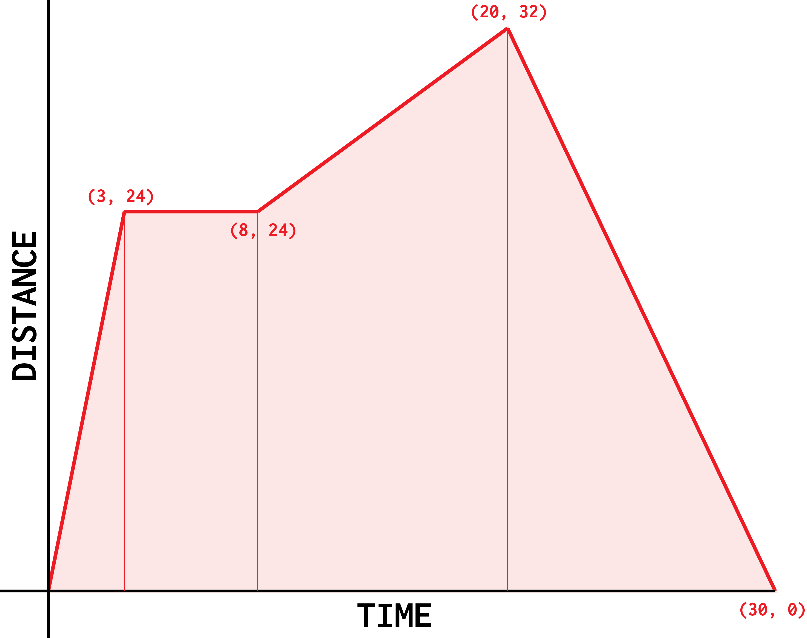
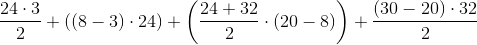

A distance time graph plots the distance something is from an
origin point, against the time.

So by looking at this graph, you can work out all of these
- The total distance travelled
- The speed at each point
So,
to calculate the total distance travelled, you calculate
the area underneath the graph.
For this graph:

This isn't the shortest method of doing this, but it works. Basically,
this is an expression of the sum of all the areas inside the graph,
when it's split into two triangles and some trapeziums.
The area of a trapezium is
0.5(a + b) * h.
From this graph, you can also work out the speed on any line. The
actual method of working this out can be worked out easily, since -
for a graph plotting the distance in metres against the time in
seconds - the speed is measured in
m/s. As one can infer
from this unit, the speed is equal to the distance divided by the
time, hence for the first line of this graph, the speed is equal
to
24 ÷ 3 = 8m/s!